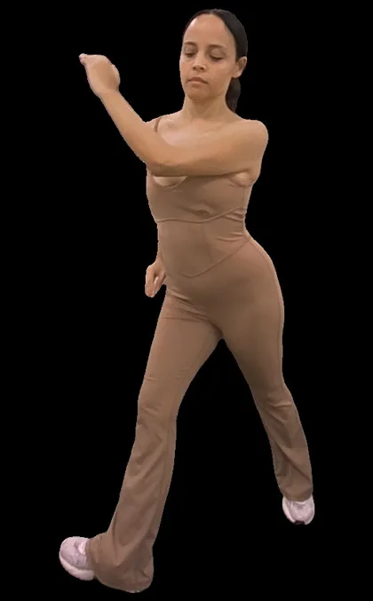
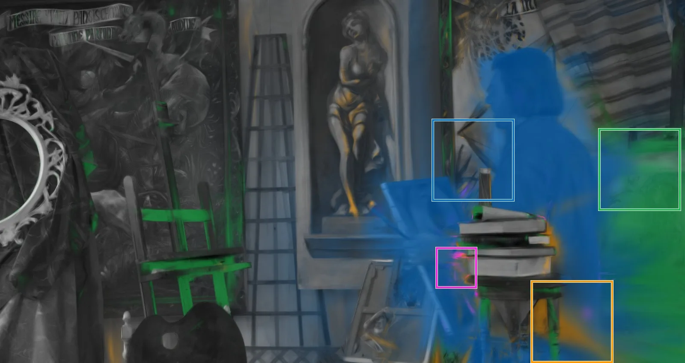

VersionGS：用「版本化高斯」做紧凑且抗快速运动的动态高斯泼溅
VersionGS: Compact and Motion-Robust Dynamic Gaussian Splatting via Versioned Gaussians
一句话：把「运动」换成「版本」——每帧状态显式存，未变的高斯只加一次引用，于是快速运动付出的是存储而不是画质；再靠剪枝与图像编码把存储压回来。
PSNR
storage
PSNR
bitrate
作者、单位与技术谱系 · Research context
作者与单位
研究脉络
- 3D Gaussian Splatting 与 MCMC-3DGS方法基座关系：表示与初始化：GOP 首帧用 MCMC 版 3DGS 重建，后续所有版本都是标准 3DGS 属性集。[VersionGS §3.1/§3.2 与参考文献 [18][19]]
- 自组织高斯网格 / KISS-GS（静态高斯压缩）研究上游关系：压缩流程借用：本文把静态 3DGS 的图像化编码与量化感知微调迁移到 GOP 字典上。[VersionGS §3.3 与参考文献 [31][32]]
- QUEEN / TAD-GS / StreamSTGS（动态高斯流式方法）评价对象关系：直接对照与问题定位：这些方法分别代表「帧间残差更新」「时间可见性 + 偏移变形」「流式时空网格」三条路线，本文用来证明三条都在快速运动下退化。[VersionGS §2 与表 1/图 6]
合作网络
- Shihang Wei ↔ Purdue UniversityShihang Wei → Purdue University关系：署名关系（第一作者与机构）[arXiv 官方 HTML 首页]
- 三位作者同机构共同署名Shihang Wei / Yichi Zhang → Fengqing Zhu关系：同机构共同署名（Purdue）[arXiv 官方 HTML 首页]
- VersionGS ↔ SuperSplat/PlayCanvas 生态VersionGS 播放端 → PlayCanvas 引擎与 SOG 格式关系：技术依赖（浏览器播放集成）[VersionGS §4.3 与参考文献 [37][38]]
作者与单位取自首页署名与邮箱；技术接续取自正文 Related Work 与参考文献。论文未提供代码/项目页，也未自述作者间关系，因此只记录同机构共同署名。
方法本质拆解 · What actually changed
离线逐帧构建 + GOP 级联合微调
每个 GOP 的第一帧用 MCMC-3DGS 重建（N3DV 150k 高斯/20k 迭代，Technicolor 300k/90k，DanceNet3D 50k/7k），之后逐帧选择性优化被选中的高斯，最后对保留的字典做一次模拟量化下的联合微调。权重（高斯属性）确实被优化，但只是局部、按帧提交，不做全局重训。
三条硬规则限制「谁能变」
第一，只有被光流位移或图像变化证据选中的高斯才允许精化，其余必须原样继承版本；第二，任何更新只有在同时降低黑白双背景平均的多视损失时才被提交；第三，新生高斯必须通过留出训练视角、逐视角误差检查，并且收益要大到能抵消其估计存储成本。剪枝阶段再加一条存储约束：按跨帧贡献排序，保留比例 ρ 直接控制码率。
解码退化为解压 + 索引收集
播放时每个 GOP 只解码一次（无损 WebP 图像 + 算术编码的二值掩码），每帧只是按 A_t 收集激活版本，再走标准 3DGS 光栅化；没有运动模型、没有神经网络在前向路径上。首帧解码含整个 60 帧 GOP 解压，ρ=0.35 时平均 ≤43 ms，ρ=1 时 165 ms；浏览器端在 iPhone 17 上 60 FPS、MacBook Air M2 上 100 FPS。
把时间维度的误差换成存储维度
它改变的不确定性是「高斯属性随时间的可解释性」：不再要求一个基元解释所有时间戳，因此快速运动不会因为优化冲突而破坏其它帧。局部结果靠共享字典里的版本索引接起来（同一版本在所有引用它的帧里属性完全一致）；它没有做的是连续时间插值，因此 GOP 内的高频闪烁与跨 GOP 跳变仍然存在。
输入是标定多视视频；改变的是时序表示（运动函数 → 版本字典 + 逐帧激活集）；动作为证据式选择性追加 + GOP 剪枝与图像编码；直接效果是快速运动帧掉幅 <0.3 dB、存储比 TAD-GS 省 5.7–6.0×。

结论与问题Conclusion & Motivation
核心结论
VersionGS 把动态场景的时序变化从「拟合运动」改成「存状态」：每个 GOP（60 帧）共享一个高斯版本字典，未变化的高斯只保留一个索引引用，变化的高斯作为完整新版本追加，早期帧继续引用旧版本。这样快速运动付出的代价是存储而不是画质：DanceNet3D 上前景 PSNR 25.68 dB（最强基线 TAD-GS 22.36、QUEEN 22.93），且从最慢五分位到最快五分位只掉不到 0.3 dB，而基线掉 1.1–4.0 dB。存储侧在 N3DV/Technicolor 上比 TAD-GS 省 6.0×/5.7× 且 PSNR 更高（32.55 对 32.34、33.66 对 33.56）。
动机与问题
现有方法分两类：把每个高斯的变化建模为时间的平滑函数（变形场、时间条件高斯、关键帧轨迹），或在帧间做受限更新（变换、量化残差、稀疏控制点）。两类都在大位移下退化，原因不同但同源：在时间共享表示里，快速运动要么靠「解释所有时间戳的持久高斯」（逐帧优化会破坏其它帧），要么靠「生命周期很短的瞬态高斯」（很少被致密化采样到，动态区欠重建或模糊）；帧到帧方法的位置梯度只在有限邻域内计算，物体移出该邻域后梯度失准，导致高斯褪色、被错误重着色或大位移被低估。
方法Method
方法总览
表示层：GOP 内所有帧共享一个字典 D={g_j}，每帧 t 只存它激活的版本索引集 A_t，播放时解码一次字典、按掩码收集激活版本交给标准 3DGS 光栅化器。构建层：从第一帧 MCMC-3DGS 初始化，之后逐帧经过四个选择性阶段——运动初始化（多视光流 + 加权最小二乘求 3D 位移，再按空间分组优化单一刚体平移，可自适应细分）、证据引导精化（只精化被运动选择器或图像变化选择器选中的高斯）、残差恢复（两轮短精化补漏）、验证式新生（多视平面扫描提出候选，只有通过留出视角检查且收益大于其估计存储成本才接受）。压缩层：按跨帧贡献剪枝版本、在模拟量化下联合微调、编码成图像 + 每版本的二值掩码。
关键技术细节
三个细节决定了它为什么不退化。第一，更新必须「有证据」：运动选择器取运动初始化移动过的高斯，图像变化选择器取「图像贡献主要落在变化像素上」的高斯，并维护逐相机参考图让缓慢变化累积到可检测；所有阶段都以多视重建损失（0.8·L1 + 0.2·(1−SSIM)，黑白双背景平均以消除透明度的歧义）为接受判据，不降损失就不提交。第二，版本永不回改：构建只追加、不改已提交版本或帧掩码，因此早期帧的质量不会被后续帧的优化破坏。第三，编码与重建解耦：字典建好后剪枝比例 ρ 可在 {0.06…1} 间调，ρ=0.5 时平均 PSNR 最多降 0.19 dB。

实验Experiments
实验设置
三个多视视频数据集共 14 个场景：N3DV（6 个，运动较慢）、Technicolor（4 个，外观复杂且有物体进入画面）、DanceNet3D（4 个，快速全身运动与衣物形变）。指标为留出相机的 PSNR/SSIM/LPIPS，DanceNet3D 上 PSNR 在人掩码内、SSIM/LPIPS 在人框内；时序一致性用 tLP×100。对照 7 个方法（Ex4DGS、4DGS、MoRGS、D-FCGS、StreamSTGS、QUEEN、TAD-GS），GOP 固定 60 帧、每序列 5 个，报告 ρ=1（不剪枝）与 ρ=0.35 两个工作点；FPS 是单张 H100 上端到端播放（含从存储文件解码每帧）。
实验数字与比较
存储与质量同时占优：N3DV 上 ρ=0.35 只需 0.060 MB/帧（TAD-GS 0.962、StreamSTGS 0.165），PSNR 32.42；Technicolor 0.112 MB/帧（TAD-GS 1.678、StreamSTGS 0.169），PSNR 33.09；DanceNet3D 0.197 MB/帧（TAD-GS 0.702），前景 PSNR 25.70（TAD-GS 22.36、QUEEN 22.93、4DGS 22.31）。播放速度也是最高：304/432/596 FPS（ρ=0.35），ρ=1 时 207/239/265 FPS。时序一致性 tLP 在 Technicolor（0.23/0.27）与 DanceNet3D（0.67/0.69）最低，N3DV 为 1.03–1.17。压缩分解：版本共享让原始 float32 存储降 9.3×（flame steak）与 14.1×（painter）；整条流水线对逐帧表示压 580×/850×/74×。
消融/失败边界
构建消融逐项给出代价：允许全量精化继承高斯，存储涨 5.1×（flame steak）与 9.6×（painter），而 PSNR 最多只涨 0.25 dB；禁用运动初始化，PSNR 掉 1.17/1.55/0.35 dB（三个场景），作者强调构建期的跟踪失败无法在 GOP 适配阶段补救；禁用验证式新生，painter 上掉 0.91 dB（人物第 1 帧不在画面里，只能拉伸背景高斯去覆盖）；GOP 从 60 加到 120 省 10–20% 存储、最多掉 0.33 dB，缩到 30 反而多 18–38% 且无稳定收益。失败边界写得很明确：没有连续时间插值，快速运动表面可能出现高频闪烁；GOP 边界有可见跳变；物体离开后又回到旧位姿会新建版本而不复用历史；整体质量对首帧 MCMC 重建敏感；60 帧 GOP 需 3–8 GPU 小时。
局限与迁移Limitations & Transfer
局限与待核验
作者明确承认：因为是离散逐帧状态、没有连续时间插值，快速运动表面偶有高频闪烁，GOP 之间会有可见过渡；顺序构建只在相邻帧间复用，物体离场再回到旧位姿时不匹配历史版本；播放必须等整个 GOP 解码完；有损 WebP 省约 15% 字节但带来场景相关的质量损失；把版本存成前驱残差虽然平均降 17% 码率，但解码更慢、峰值内存 2.2×，且链式损失把有损编码的 PSNR 损失从 ≤1.3 dB 放大到 4.4 dB。我们待核验：论文未给代码仓库或项目页，复现需自行实现四阶段构建；「按运动幅度分箱」的对比依赖光流估计器（DIS），换光流是否同结论未知；全部指标是留出相机新视角，未评下游任务（如跟踪或位姿）可用性。
与你研究路线的关系
这篇与我们主线的交集在「状态该存什么、什么时候更新」：它用「有证据才提交新版本」替代「每帧都优化」，与 Recall4D 的「有观测才更新」是同一个思想在两种表示上的体现，可以直接借到我们维护地图/状态时的更新策略里。可迁移的模块是选择性更新 + 接受判据（多视损失在黑白双背景下平均，消除透明度歧义），这套判据可以用来判断一次地图更新是否真的改善了重建，而不是只降低训练损失。对我们更实际的一点是压缩视角：如果未来要把高斯地图放进在线系统，版本字典 + 剪枝比例调码率的做法比「换更强的编码网络」更容易落地。下一步实验：在我们自己的动态序列（含快速运动与物体进出）上比较「每帧优化」与「证据式追加」在存储、时延与下游位姿精度上的差异，并测 GOP 长度对跨段跳变的影响。